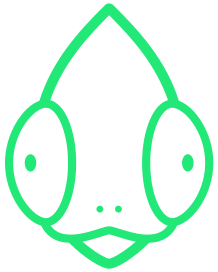
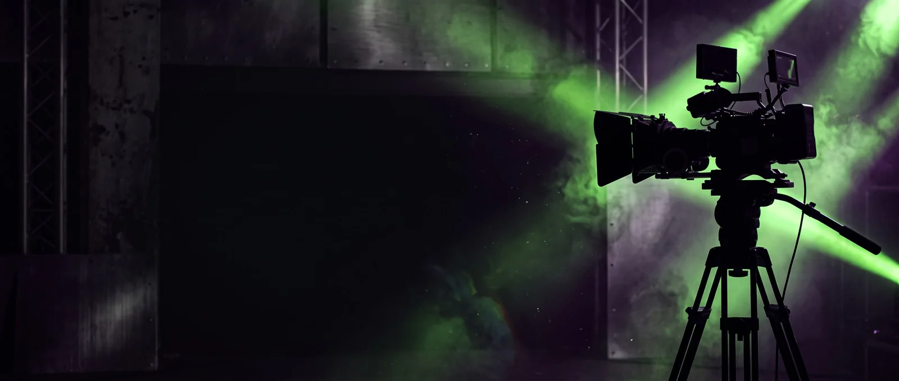
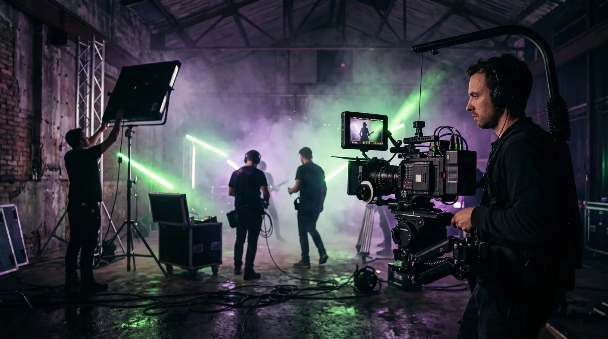
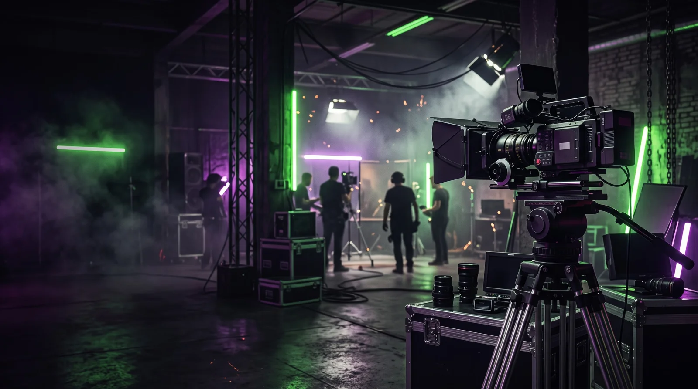
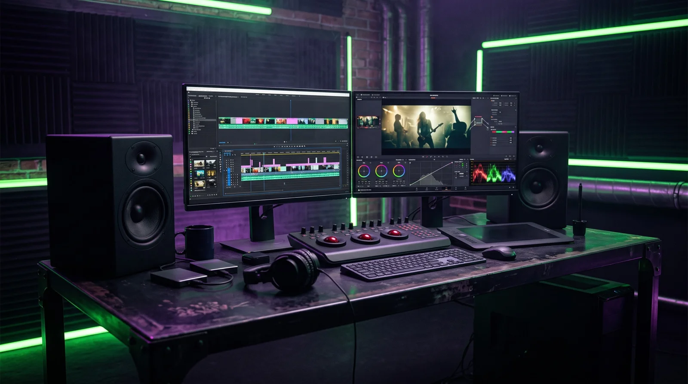
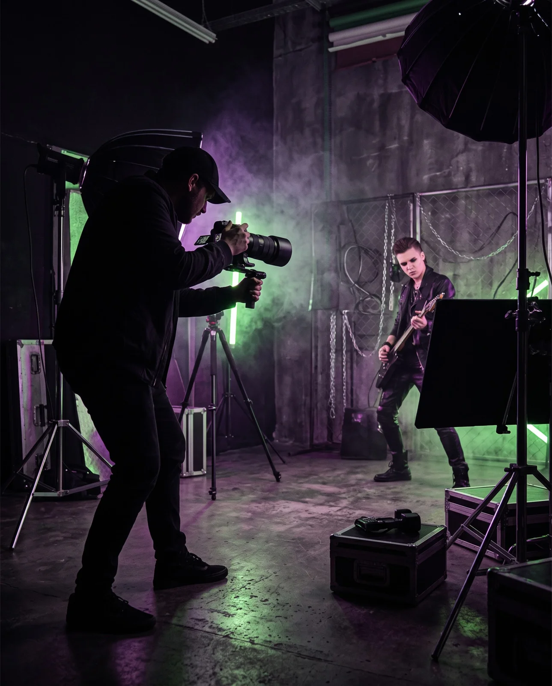
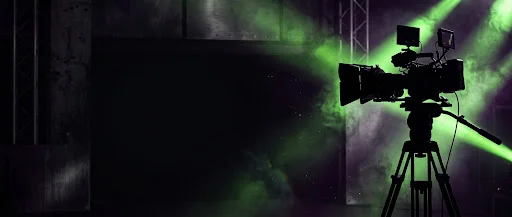

MASTER / 001
MASTER / 001
LANÇAMENTO EM DESTAQUE
ALGUIDAR — HC WORLDWIDE (OFFICIAL 4K VERSION)
- ESTILO
- Hardcore / Rock / Crossover
- ENTREGA
- Direção, Captação 4K, Edição & Pós-Produção
- DIREÇÃO
- Jonas Eduardo Fernandes (Camaleão Produtora)

CAMALEÃOPRODUTORAARQUIVO OFICIAL • +8 ANOS DE CENA • +MILHÕES DE VIEWS
De produções independentes a videoclipes com milhões de visualizações no YouTube. Filtre abaixo pelo seu gênero musical e assista à direção, fotografia de cena e efeitos visuais da Camaleão Produtora.
EXPLORAR CATÁLOGO
MASTER / 001
LANÇAMENTO EM DESTAQUE
Combine os filtros para encontrar referências próximas da linguagem visual do seu próximo lançamento.
01 / GÊNERO MUSICAL
02 / ETAPA TÉCNICA
Exibindo 9 produções
01 / 09Hardcore / Rock 02 / 09Rap / Hip-Hop Nacional
02 / 09Rap / Hip-Hop Nacional
03 / 09Trap / UrbanoPLAYLIST • 01
04 / 09Sertanejo / Pocket ShowPLAYLIST • 02
05 / 09Pop / AlternativoPLAYLIST • 03
06 / 09Funk / Cena UrbanaPLAYLIST • 04
07 / 09Rock / AlternativoPLAYLIST • 05
08 / 09Ao Vivo / AcústicoPLAYLIST • 06Nenhuma produção corresponde a essa combinação. Experimente outro gênero ou etapa técnica.
SEU PRÓXIMO LANÇAMENTO COMEÇA AQUI